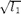
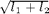
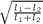

GSTFEATURE - Feature representation of a tensor field.
Contents
Description
Derive features like norm, orientation, coherence, inertia... from tensor representation.
Syntax
f = GSTFEATURE(gx2, gy2, gxy);
[f1, f2, ...] = GSTFEATURE(gx2, gy2, gxy, feature,
'Property', propertyvalue, ...);
F = GSTFEATURE(gx2, gy2, gxy, feature, 'Property', propertyvalue, ...);
Inputs
gx2, gy2, gxy : components of a symmetric (structure) tensor T.
feature : optional string or cell of strings setting the feature to be estimated; it is one of the following:
- 'norm' for the approximated norm based on the eigenvalues of the tensor T,
- 'frob' for the Frobenius norm of the tensor T,
- 'orient' for the double angle representation of the tensor T,
- 'orvec' reoriented field for consistency with the vectorial field provided by the additional parameters [ex,ey] (see below),
- 'ordir' for the direction,
- 'inert' for the inertia of the tensor T,
- 'coher' for computing the coherence (aka anisotropy) index of the tensor T;
or any cell combining those strings (order has no importance); default: feature='norm'.
Property [propertyname propertyvalues]
'eign' : optional string defining the method used for the tensor's norm approximation; it is either:
- 'zen' (or 'l1') for the square root of the largest eigenvalue: ,
- 'sap' (or 'sum') for the sum of the eigenvalues: ,
- 'koe' (or 'dif') for the difference of the eigenvalues: ,
- 'ndi' for the normalized difference of the eigenvalues: ;
default: eign='l1'.
'ex', 'ey' : optional vectorial field provided by the vectors [ex,ey] used for computing the feature 'orvec'; default: ex=ey=[].
Output
f : matrices of features derived from the GST; in the case one output only is provided and several features are computed, the features are concatenated into the single output.
References
[Zenzo86] S. Di Zenzo: "A note on the gradient of a multi-image", CVGIP, 33:116-125, 1986.
[Cuma91] A. Cumani: "Edge detection in multispectral images", CVGIP: Graphical Models and Image Processing, 53(1):40-51, 1991.
[VV95] L. van Vliet and P. Verbeek: "Estimators for orientation and anisotropy in digitized images", Proc. ASCI, pp. 442-450, 1995. http://reference.kfupm.edu.sa/content/e/s/estimators_for_orientation_and_anisotrop_57847.pdf
[Kosch95] A. Koschan: "A comparative study on color edge detection", Proc. ACCV, pp. 574-578, 1995.
[Cuma98] A. Cumani: "Efficient contour extraction in color images", Proc. ACCV, pp. 582-589, LNCS 1351, 1998.
[Weick98] J. Weickert: "Anisotropic Diffusion in Image Processing", Teubner-Verlag, Stuttgart (Germany), 1998.
[Kothe03] U. Koethe: "Integrated edge and junction detection with the boundary tensor", Proc. IEEE ICCV, vol. 1, pp. 424?431, 2003.
[Scheun03] P. Scheunders: "A wavelet representation of multispectral images", Frontiers of Remote Sensing Information Processing, pp. 197?224. World Scientific, 2003.
[Tschum06] D. Tschumperle: "Fast anisotropic smoothing of multivalued images using curvature-preserving PDE?s", International Journal of Computer Vision, 68(1):65?82, 2006.
[WCFTA06] H. Wang, Y. Chen, T. Fang, J. Tyan and N. Ahuja: "Gradient adaptive image restoration and enhancement", Proc. ICIP, vol. 2, pp. 893-896, 2006.
See also
Related: GSTSMOOTH, GRD2GST, GSTDECOMP. Called: GSTFEATURE_BASE.
Function implementation
function varargout = gstfeature(gx2, gy2, gxy, varargin)
parsing parameters
error(nargchk(1, 18, nargin, 'struct')); error(nargoutchk(1, 7, nargout, 'struct')); if ~(isnumeric(gx2) && isnumeric(gy2) && isnumeric(gxy)) error('gstfeature:inputerror','matrices are required in input'); end p = createParser('GSTFEATURE'); % create an instance of the inputParser class. p.addOptional('f','norm', @(x)ischar(x) || iscell(x)); % any(strcmpi(x,{'norm','frob','orient','ordir','reorient','inert','coher'}); p.addParamValue('eign',[],@(x)ischar(x) && ... any(strcmpi(x,{'abs','zen','l1','sap','sum','ndi','dif','koe'}))); p.addParamValue('ex',[],@(x)isnumeric(x)); p.addParamValue('ey',[],@(x)isnumeric(x)); % parse and validate all input arguments p.parse(varargin{:}); p = getvarParser(p);
internal variables and further testing
% check the compatibility of the input parameters if any(size(gx2)~=size(gy2)) || any(size(gx2)~=size(gxy)) error('gstfeature:inputerror','matrices must have same dimensions'); end % % create the list of feature names % if nb_dims(p.f)==2 % then already an array of feature names has been passed % lfeat = p.f; % % else % let's create such an array from the concatenate string % lfeat = str2vsubstr(p.f, ... % strvcat('eigenorm','norm','frobenius','frob','orientation', ... % 'orient','direction','ordir','vectorial','orvec', ... % 'inertia','inert','coherence','coher')); %#ok % end if ischar(p.f), p.f = {p.f}; end nfeat = numel(p.f); if nargout~=1 && nargout~=nfeat error('gstfeature:inputerror', ... ['the no. of output arguments must be 1 or equal to the no. ' ... 'of computed features must be equal']); end if ~any(strncmp('norm',p.f,4)) && ~any(strncmp('eigenorm',p.f,4)) && ... ~isempty(p.eign) warning('gstfeature:incompatibleparameter',... 'parameter eign ignored for features other than norm'); else p.eign = 'zen'; % default value, may be unused end test = ~any(strncmp('orvec',p.f,4)) && ~any(strncmp('vectorial',p.f,4)); if test && (~isempty(p.ex) || ~isempty(p.ey)) warning('gstfeature_base:incompatibleparameter',... 'parameters ex,ey ignored for features other than orvec'); elseif ~test && isempty(p.ex) && isempty(p.ey) error('gstfeature_base:incompatibleparameter',... 'parameters ex,ey need to be passed with feature orvec'); end
main computation
varargout{1} = [];
for i=1:nfeat
F = gstfeature_base(gx2, gy2, gxy, p.f{i}, p.eign, p.ex, p.ey);
if nargout==1, varargout{1} = cat(3, varargout{1}, F);
else varargout{i} = F; end
end
display
if p.disp figure, ncols = min(3,nfeat); nrows = ceil(nfeat/ncols); for i=1:nfeat subplot(nrows,ncols,i), imagesc(varargout{i}), axis image off; title(p.f(i,:)), colormap gray; end end
end % end of gstfeature